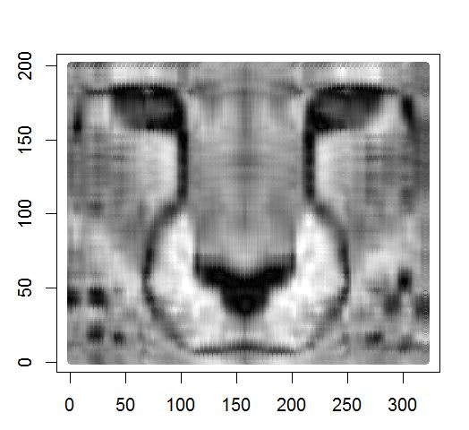
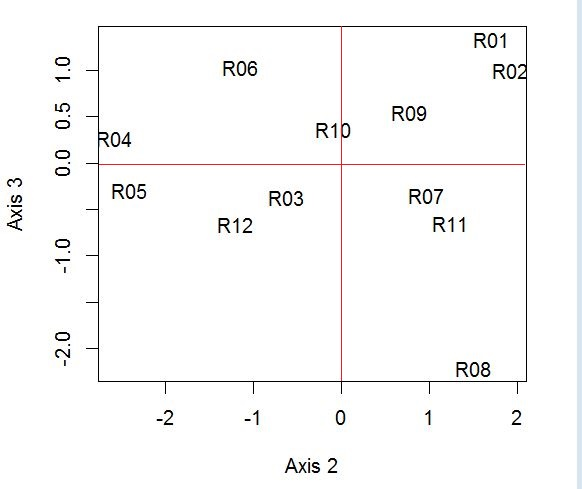
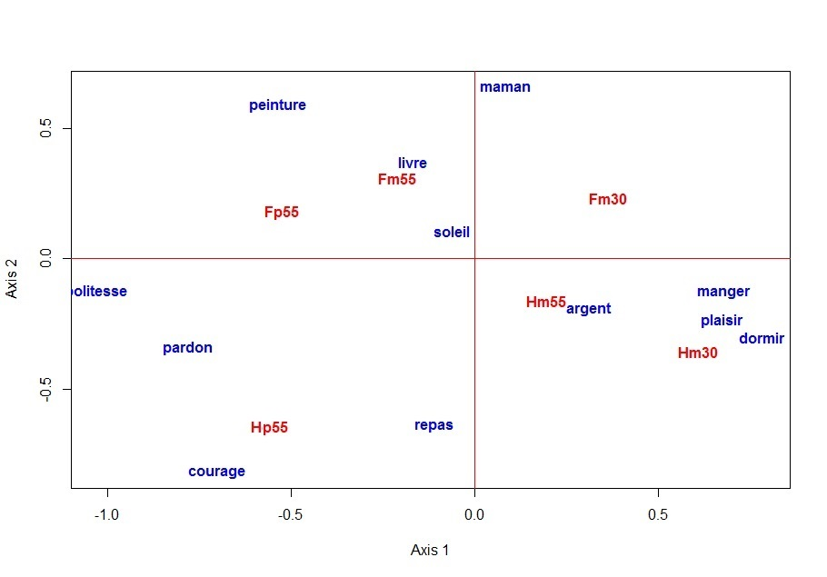
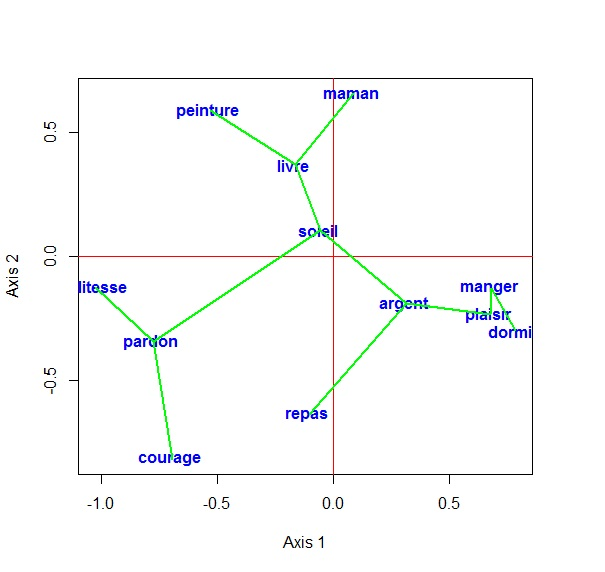

Chargement du fichier compressé de codes et de données [dossier: "ADT_R"]
Les codes de ces quatre fonctions et leurs contextes d'utilisation constituent des exemples pédagogiques du livre Analyse des Données Textuelles (L. Lebart, B. Pincemin, C. Poudat), Presse de l'Université du Québec, 2019.
Le logiciel R est à la fois un langage et une bibliothèque. Comme Python, il s’agit d’un logiciel gratuit et multiplateforme. C’est la composante non exclusive (logiciel libre) du langage de programmation S (Chambers, 1998), elle-même dérivée des travaux d’une équipe de Bell Laboratories datant de 1976 (équipe composée de Rick Becker, John Chambers, Doug Dunn, Paul Tukey et Graham Wilkinson).
Sommaire
1- Compression et reconstruction d'images (avec affichage graphique)
2- Analyse en composantes principales (avec affichage graphique)
3- Analyse des correspondances (avec affichage graphique)
4- Calcul et tracé (sur un plan principal) de l'arbre de longueur minimale
Comme pour Python, il s'agit simplement de pénétrer, grâce à R, dans la boîte noire d’une fonctionnalité banale disponible dans la plupart des logiciels statistiques d’analyse d’images.
Evidemment, le code pourrait être beaucoup plus compact, mais peut-être moins lisible.Commandes pour l'interface R
#-------------------------------------
source("c:\\ADT_R\\svd_image_E.r") # code source
path= "c:\\ADT_R\\Cheetah.txt" # données (niveaux de gris)
X=read.table(path, header=FALSE, row.names=1, sep = "")
nd = 8 # nombre d'axes pour la reconstitution (par exemple)
Y = recons(X, nd)
visu_image(Y)
#-------------------------------------
Le petit fichier de test de données «Cheetah.txt» est fourni dans le dossier ADT_R. C'est un tableau numérique simple (200 x 320) [niveaux de gris pour chaque pixel]. Voir: Nelson M. (1993). La compression des données. Text, images, sons. Dunod, Paris.
Cas d'une image plus générale au format ".pgm" (Portable Grey Map)
Le fichier "Cheetah.txt" dans cet exemple est une matrice simple, plus rustique que les formats d'image les plus courants (bmp, jpg, png).
Ces images doivent être converties au format pgm par un logiciel libre tel que GIMP ou IrfanView. La matrice X de lignes de commande est ensuite obtenue à l'aide des quatre lignes de commande suivantes:
#-------------------------------------
# Quatre lignes de commandes à substituer à la ligne:
# "X = read.table ..." dans le cas d'une image en format pgm
#-------------------------------------
install.packages ( "pixmap"); # à n'utiliser que la première fois ! ...
library (pixmap); # chargement du "pixmap package"
imag = read.pnm (""c:\\ADT_R\\Cheetah.pgm"); # pour une image "pgm"
X = 255 * imag @ gray; # On peut maintenant appeler la fonction: recons ()
#-------------------------------------
L'image ci-dessous est fournie par la fonction: recon():

Image obtenue après avoir saisi les lignes de commandes R . Taux de compression 200/8 = 25 (8 axes principaux).
Il s’agit simplement d’obtenir, grâce à R, une fonctionnalité disponible dans la plupart des logiciels statistiques d’analyse exploratoire multivariée.
Encore une fois, le code pourrait être beaucoup plus compact, mais peut-être moins lisible.Commandes pour l'interface R
#-------------------------------------
# Commandes pour l'interface R
source("c:/ADT_R/ACPS_E.r") # emplacement du code source
path= "c:/ADT_R/Mini_Semio.txt" # emplacement des données
X=read.table(path, header=TRUE, row.names=1, sep = ",") # X = tableau de données
Y =ACP(X) # fonction principale
plot_ind (Y, X, hor=2, ver=3, font = 1) # graphe des individus (lignes)
# (plane (2, 3) )
plot_var (Y, X, hor=2, ver=3, font = 1) # graphe des variables (colonnes)
# (plan (2, 3) )
#--------------------------------------------------
Le petit fichier de test de données «Mini_semio.txt» est fourni dans le dossier ADT_R. Il s’agit d’un simple tableau numérique (12 x 7) donnant les scores attribués par 12 répondants à un ensemble de 7 mots. La liste sémiométrique réelle contient 210 mots et la taille des échantillons varie de 800 à plusieurs milliers. Voir : The Semiometric Challenge: Words, Lifestyles and Values (L. Lebart, J-F. Steiner, M. Piron, J. Wisdom), L2C, 2014. (Télécharger le livre - pdf) (Télécharger la couverture du livre - pdf) ... et (en Français) La sémiométrie (L. Lebart, M. Piron, J.-F. Steiner), Dunod, 2003. (Télécharger le livre - pdf)
Petit tableau-test ("Mini-semio.txt")
arbre, cadeau, danger, morale, orage, politesse, sensuel
R01, 7, 4, 2, 2 , 3 , 1 , 6
R02, 6 , 3 , 1 , 2 , 4 , 1 , 7
R03, 4 , 5 , 3 , 4 , 3 , 4 , 3
R04, 5 , 5 , 1 , 7 , 2 , 7 , 1
R05, 4 , 5 , 2 , 7 , 1 , 6 , 2
R06, 5 , 7 , 1 , 5 , 2 , 6 , 5
R07, 4 , 2 , 1 , 3 , 5 , 3 , 6
R08, 4 , 1 , 5 , 4 , 5 , 4 , 7
R09, 6 , 6 , 2 , 4 , 7 , 5 , 5
R10, 6 , 6 , 3 , 5 , 3 , 6 , 6
R11, 7 , 7 , 6 , 7 , 7 , 6 , 7
R12, 2 , 2 , 1 , 2 , 1 , 3 , 2
L'image ci-dessous est l'image produite par les fonctions ACP() et plot_ind:

Image obtenue après avoir saisi les cinq lignes de commande R
Représentation des 12 répondants dans le plan "semiometrique" (2, 3)
Il s'agit d'un code simple et autonome pour l'analyse des correspondances, comprenant une représentation simultanée de lignes et de colonnes.
Encore une fois, le code pourrait être beaucoup plus compact, mais peut-être moins lisible.Commandes pour l'interface R
#-------------------------------------
# Commandes à saisir dans l’interface R.
# ------------------------------------------------- ---------------------
# fonction Y = afcor (X): Analyse de correspondance de la matrice X
# ------------------------------------------------- ---------------------
# Exemple pour une table de contingence "tab.csv" dans le dossier ADT_R
# (le code source: - afcor_E.r - se trouve dans le même dossier)
source ("c: /ADT_R/afcor_E.r") # emplacement du code source
path = "c: /ADT_R/tab.csv" # emplacement des données
# chemin mène à un fichier Excel (c) [format csv]
X = read.csv (path, row.names = 1, sep = ";") # X = table de données
Y = afcor (X)
plot_simult (Y) # tracé simultané de lignes et de colonnes de la table de données
#----------------------------------------------------------------------
Le petit fichier de test de données «tab.csv» est fourni dans le dossier ADT_R. C'est un tableau lexical simple (12 x 6) donnant les fréquences de 12 mots (lignes) dans les réponses de six catégories de répondants. à la question suivante dans une enquête par sondage:
«Personne ne peut expliquer pourquoi, peut-être à cause de ce qu'ils évoquent, nous trouvons certains mots agréables, d'autres désagréables.
1. En ce qui vous concerne personnellement, quels sont les mots que vous trouvez les plus agréables? (Citez autant de mots que possible).
2. Quels sont les mots que vous trouvez les plus désagréables? (Citez autant de mots que possible). "
C'est un cas de "sémiométrie ouverte" (sans liste de mots imposée), cf. Chapitre 4 du livre déjà cité: The Semiometric Challenge: Words, Lifestyles and Values
(L. Lebart, J-F. Steiner, M. Piron, J. Wisdom), L2C, 2014.
(Téléchargez le livre - pdf)
(Téléchargez la couverture du livre - pdf)
... et (en Français) La sémiométrie (L. Lebart, M. Piron, J.-F. Steiner), Dunod, 2003. (Téléchargez le livre - pdf)
Petit tableau de données - test ("tab.csv")
Ident ; Hm30;Hm55;Hp55;Fm30;Fm55; Fp55
argent ; 11; 15; 6; 14; 9; 3
courage ; 2; 3; 11; 1; 3; 4
dormir ; 8; 3; 1; 6; 2; 0
livre ; 2; 7; 1; 9; 11; 11
maman ; 0; 3; 0; 12; 11; 3
manger ; 9; 5; 1; 10; 3; 1
pardon ; 1; 2; 6; 0; 5; 5
peinture ; 0; 0; 1; 2; 7; 3
plaisir ; 10; 6; 2; 11; 2; 1
politesse; 0; 1; 5; 0; 4; 8
repas ; 3; 5; 4; 0; 3; 1
soleil ; 26; 32; 23; 54; 56; 42
Identifiants des colonnes (catégories de répondants):
Hm30 = Homme, moins de 30 ans;
Hm55 = Homme, entre 30 et 55 ans;
Hp55 = Homme, plus de 55 ans.
Fm30 = Femme, moins de 30 ans;
Fm55 = Femme, entre 30 et 55 ans;
Fp55 = Femme, plus de 55 ans.
L'image ci-dessous est produite par les fonctions afcor() et plot_simult():

Image obtenue après avoir saisi les cinq lignes de commandes R
Le langage de base R est à nouveau utilisé volontairement sans aucune bibliothèque spécialisée. Un choix devait être fait entre les nombreuses méthodes de clustering. Nous avons choisi d'implémenter ici l'arbre de longueur minimale (fonction armin()) en utilisant l'algorithme de Prim. Les fonctions print_armin et plot_armin donnent respectivement la liste des arêtes de l'arbre et une représentation de celle-ci dans un plan principal. L'arbre est calculé ici à partir des coordonnées principales résultant d'une analyse de correspondance (fonction afcor dans la section 3 ci-dessus). Avec ces coordonnées, la distance euclidienne habituelle correspond à la distance Chi-2 calculée sur les données initiales..
Enfin, une petite fonction afcor_armin_plot (voir la fin du listing) fournit la séquence souhaitée. Elle est incluse dans le fichier armin.r, lui-même inclus dans le dossier intitulé ADT_R. Pour obtenir les résultats souhaités, écrivez simplement les lignes suivantes:
Commandes pour l'interface R
# -------------------------------------
# Commandes à saisir dans l’interface R.
# ------------------------------------------------- ---------------------
# fonction composite Y = afcor_armin_plot (X) [dans le dossier téléchargé ADT_R]
# ------------------------------------------------- ---------------------
# Exemple pour une table de contingence "tab.csv" dans le dossier ADT_R
# (les codes sources: afcor_E.r et armin_R.r se trouvant dans le même dossier ADR_r)
source("c:/ADT_R/afcor_E.r") # emplacement du code source 1
source("c:/ADT_R/armin_E.r")) # emplacement du code source 2
path = "c:/ADT_R/tab.csv" # emplacement des données
# mêmes données que dans la section A3
afcor_armin_plot(path)
#----------------------------------------------------------------------
Le tableau ci-dessous est produit par la fonction afcor_armin_plot():
Tableau des arêtes de l'ALM obtenues après la saisie des quatre lignes de commande R ci-dessus.
NumDeb arête NumFin NomDeb arête NomFin
[1,] 1 ----- 9 argent ----- plaisir
[2,] 9 ----- 6 plaisir ----- manger
[3,] 6 ----- 3 manger ----- dormir
[4,] 1 ----- 12 argent ----- soleil
[5,] 12 ----- 4 soleil ----- livre
[6,] 4 ----- 5 livre ----- maman
[7,] 1 ----- 11 argent ----- repas
[8,] 4 ----- 8 livre ----- peinture
[9,] 12 ----- 7 soleil ----- pardon
[10,] 7 ----- 10 pardon ----- politesse
NumDeb = numéro d'origine; NumFin = num. extrémité
NomDeb = Identificateur de l'origine; NomFin = Ident. extrémité
L'image ci-dessous est l'image produite par la fonction afcor_armin_plot():

Image obtenue après la saisie des quatre lignes de commande R ci-dessus.